About Us
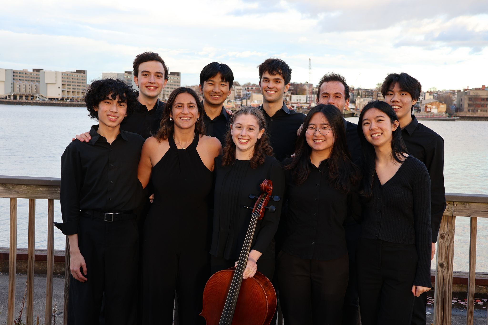
Founded in 2024, Crimson Cellos performs a diverse range of popular pieces arranged for cellos, from movie soundtracks to hip hop, in an effort to connect classical instruments with modern music. Crimson Cellos aims to spread musical diffusion by challenging cello misconceptions, which include its limited ability to play only classical music and its role as a relatively less prominent instrument in the orchestra. By illustrating how the cello can carry the main melody or express nuanced emotion, Crimson Cellos hopes to demonstrate why they love this instrument so much.
Current Members
-
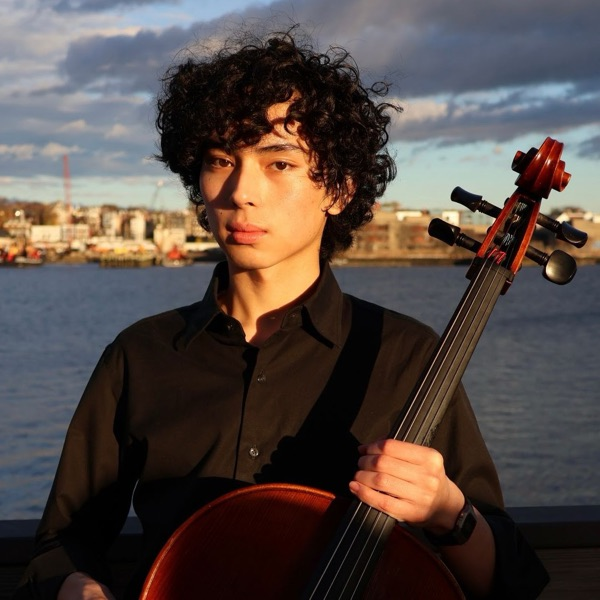
Antonino Libarnes ’28
Co-President
Antonino studies Computational Neuroscience and Mathematics and is from Kansas City, MO. If he could not play the cello, he would use it as a fishing spear.
-
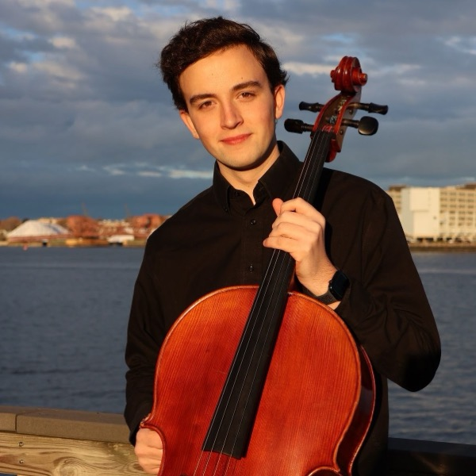
Brian Tollar ’29
Co-President
Brian studies Electrical Engineering and is from Syracuse, NY. If he could not play the cello, he would use it as a golf club.
-
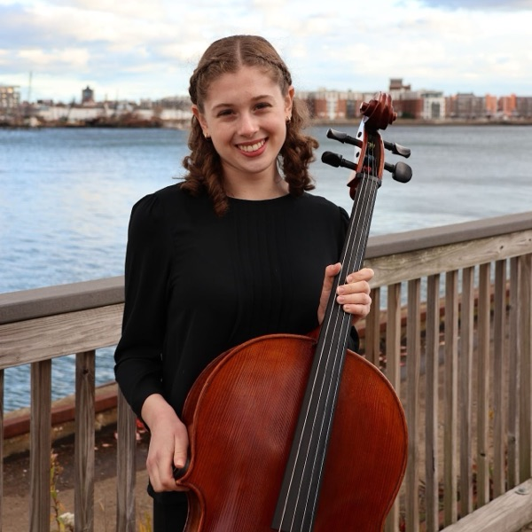
Grace Barnett ’29
Publicity Chair
Grace studies Government and is from Westwood, MA. If she could not play the cello, she would use it as a sword and shield.
-
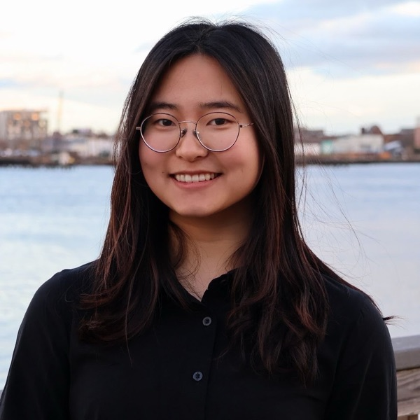
Nina Wu ’29
Social Chair
Nina studies Philosophy and Economics and is from Diamond Bar, CA. If she could not play the cello, she would use it as a shelf in her dorm.
-
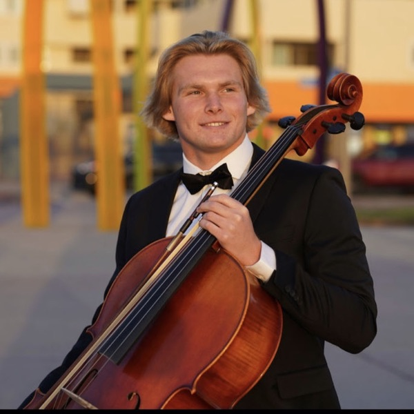
Bradford Dickson ’27
Bradford studies Economics and Music and is from Imperial Beach, CA. If he could not play the cello, he would use it as a boat.
-
Kevin Lim ’28
Kevin studies Neuroscience and is from Victoria, Canada. If he could not play the cello, he would use it as a TK.
-
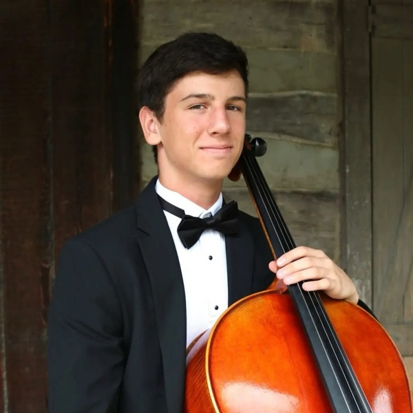
Brody Van Wave ’29
Brody studies Engineering and is from O’Fallon, MO. If he could not play the cello, he would use it as a fancy bowl.
-
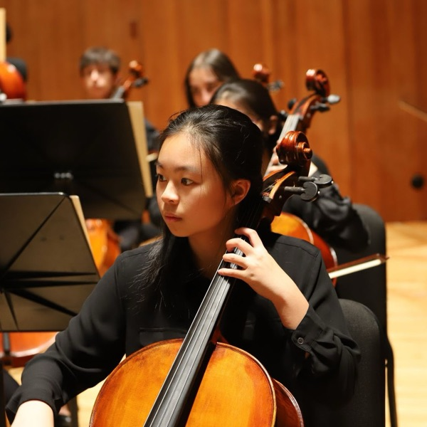
Athena Zhou ’29
Athena studies Computer Science and Economics and is from Parkton, MD. If she could not play the cello, she would use it as a sled.
-
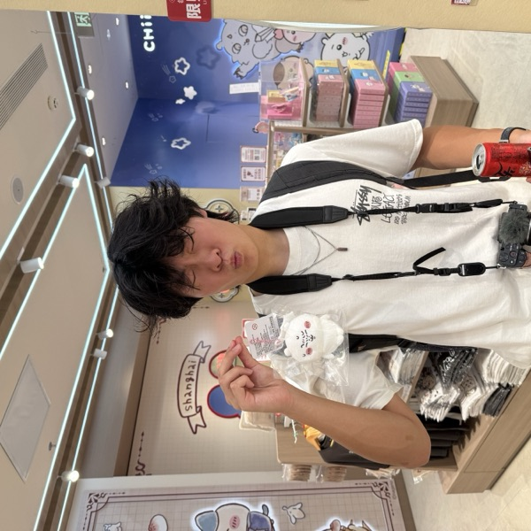
Nick Li ’29
Nick studies Earth and Planetary Sciences and is from Lincoln, Nebraska. If he could not play the cello, he would use it as a TK.
-
Jupiter MacAvoy ’29
Jupiter studies TK and is from TK. If she could not play the cello, she would use it as a TK.
-
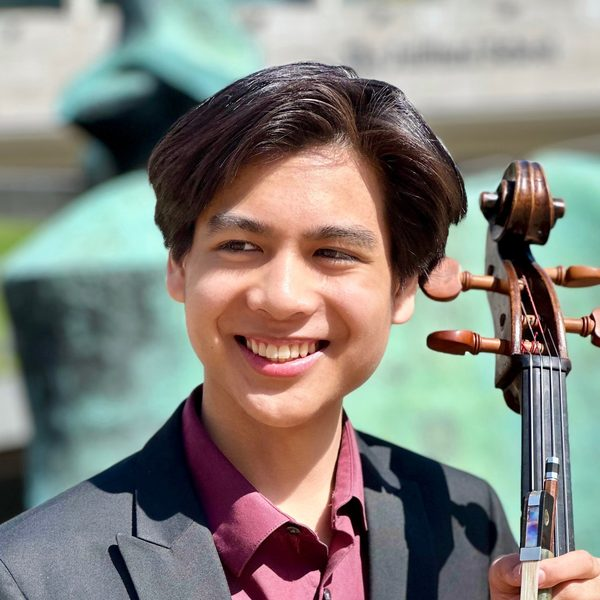
Matthew Ho ’30
Matthew is planning on studying TK and is from TK. If he could not play the cello, he would use it as a TK.
-
Jack Avery ’30
Jack is planning on studying physics and is from Brookline, MA. If he could not play the cello, he would use it as a TK.
Alumni
-
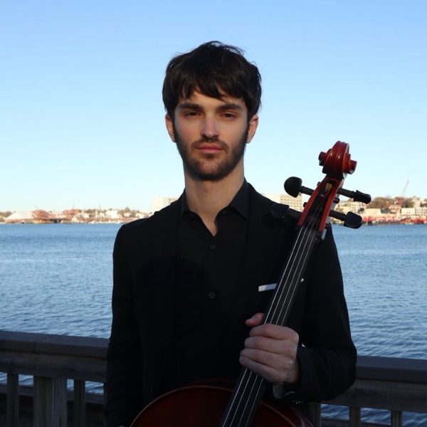
Marcos Johnson Noya ’26
Former Social Chair
Marcos studied Statistics and is from Laramie, WY. If he could not play the cello, he would use it as a tennis racquet.
-
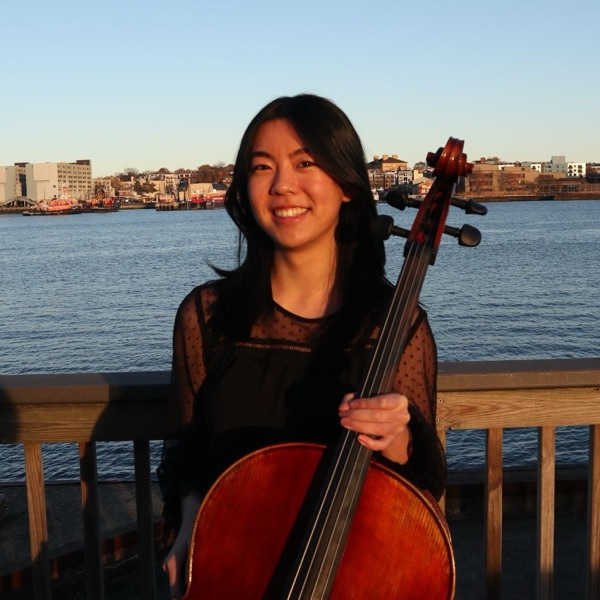
Joyce Lu ’26
Former Co-President
Joyce studied Computer Science with a secondary in Economics and is from Westchester, NY. If she could not play the cello, she would use it as a charcuterie board.
-
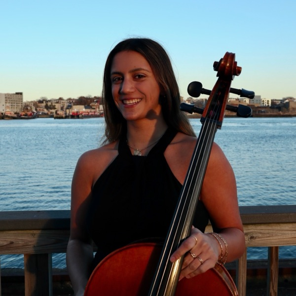
Kat Ravichandran ’26
Former Co-President
Kat studied Computer Science and Philosophy with a secondary in Economics and is from Charlottesville, VA. If she could not play the cello, she would use it as a rocking horse.
-
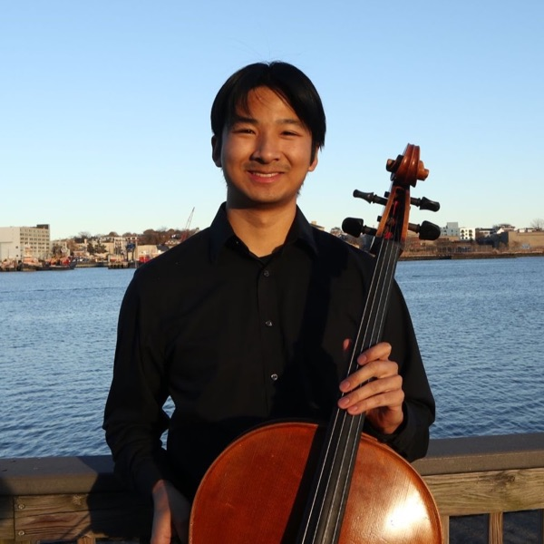
Henry Wu ’25
Snack Sensei
Henry studied Statistics with a secondary in Sociology and is from Essex Junction, VT. If he could not play the cello, he would use it as a plant holder/garden bed.
If you are missing from this page email us at crimsoncellos@gmail.com.